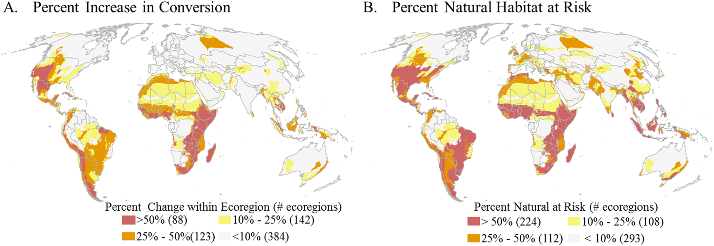

了解TNC
TNC在中国
TNC在全球
TNC大事记
保护项目
保护地
淡水
气候变化
保护无国界
中国全球保护基金
减少象牙消费项目
保护科学
保护方法与工具
信息服务
保护科学
新闻中心
中国项目进展
媒体报道
全球项目进展
走进自然
图片故事
影像记录
自然贺卡
有问有答
TNC阅览室
我的TNC
我要参与
我要留言
我的资料
更多参与
志愿者故事
下载自然客
我要支持
为大象发声
滇金丝猴300+计划
6m²—植被恢复计划
The Nature Conservancy
TNCMAPS
全球生态保护地图集
ConservationGateWay
ClimateWizard
基于对自然栖息地的开发风险的生态环境变化

城市扩张的发展威胁
农业扩张的发展威胁
常规石油和天然气的发展威胁
非常规石油和天然气的发展威胁
煤炭的发展威胁
应用级风电的发展威胁
太阳能电力的发展威胁
第一代生物燃料的发展威胁
采矿业的未来发展威胁
Natural lands at risk within geopolitical regions.
Natural lands at risk within biomes.
生态发展
城市扩张
农业扩张
石油天然气
煤炭发展
风能电力
太阳能电力
生物燃料
采矿业
天然林地
Go TOP